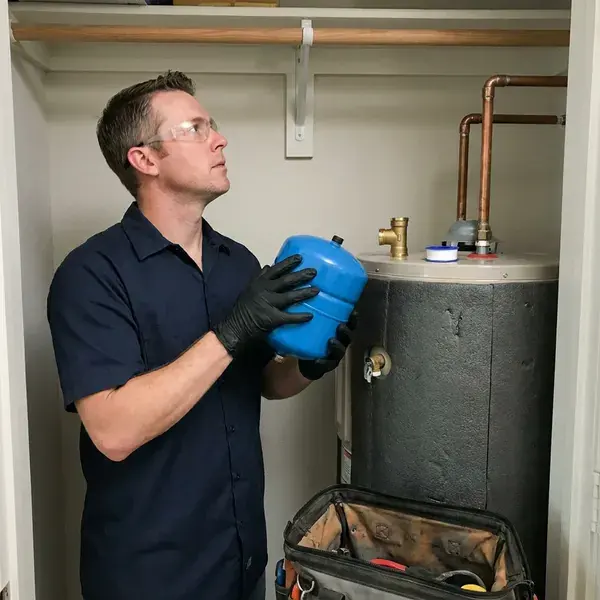

Water Heater Expansion Tank Installation in Kaiminani, HI
For reliable water heater expansion tank installation in Kaiminani, HI, count on the experienced plumbers at HKL Plumbing.
- Same-Day Installation Available
- Code-Compliant Mounting
- Precharged to Your Pressure
- Upfront Pricing

Stop Pressure Spikes From Wearing Out Your Water Heater in Kaiminani, HI.
Keep your water heater running efficiently and safely with our professional installation services.
Professional Water Heater Expansion Tank Installation in Kaiminani, HI
HKL Plumbing specializes in professional water heater expansion tank installation, a critical component for the health of your home's plumbing system. Changing water pressure and closed plumbing systems make these tanks essential for preventing damage to your water heater and pipes.
Our expertise includes:
- Protecting water heaters from thermal expansion damage
- Preventing excessive pressure in plumbing systems
- Tank sizing based on heater gallons, pressure and water temperature

Additional Plumbing Installation Services in Kaiminani, HI
We install water heaters, pumps, lines, and fixtures across Kaiminani, HI with precision workmanship that meets every local code.


Customers
Why Choose HKL Plumbing for Water Heater Expansion Tank Installation in Kaiminani, HI?
HKL Plumbing provides detailed assessments to determine the correct size and type of expansion tank for your water heater and home, for optimal performance and safety.
- Measured Pressure, We test static water pressure and set the tank precharge to match.
- Properly Supported, Tanks are strapped or bracketed so their weight never hangs on the pipe.
- Water Heater Lifespan, By smoothing out pressure swings, an expansion tank can significantly extend the life of your water heater.
Citywide Coverage
HKL Plumbing serves every neighborhood of Kaiminani, so residents across the entire area have access to our professional water heater expansion tank installation. We understand the plumbing needs of homes here in Kaiminani.
Experienced Team
Each plumber at HKL Plumbing is committed to delivering quality workmanship and precise installation, so your water heater expansion tank works properly for years to come.
Safety-First Approach
Our meticulous approach means your expansion tank is installed correctly, preventing hazards and protecting your home's plumbing system from excessive pressure.
Trusted Certified Kaiminani Plumbing Services Professionals
At HKL Plumbing, we take pride in providing certified plumbing services throughout Kaiminani, HI. Backed by recognized industry credentials, our experienced plumbers combine technical skill with genuine customer care. Whether it is repair, installation, or maintenance, we follow strict safety and quality standards to deliver lasting results you can trust.
Call Us Now PHCC Plumbing Contractor Recognition
PHCC Plumbing Contractor Recognition Better Business Bureau (BBB) Accreditation
Better Business Bureau (BBB) Accreditation Angi Certified Pro
Angi Certified Pro ISO 9001 Quality Management Certification
ISO 9001 Quality Management CertificationReliable Water Heater Expansion Tank Installation Services in Kaiminani, HI
Expansion Tanks With Tankless Water Heaters in Kaiminani, HI
Tankless water heaters hold very little water, so thermal expansion is minimal in most homes. However, homes with recirculation loops, storage buffer tanks or certain closed system setups may still benefit from an expansion tank. We evaluate your system and only recommend a tank when it serves a real purpose. This keeps you from paying for parts you do not need.

Commercial and Multi-Unit Expansion Tanks in Kaiminani
Apartment buildings, restaurants and offices with large commercial water heaters or multiple tanks need larger expansion tanks sized for total system volume. We calculate requirements for the entire hot water system, including any storage tanks and recirculation loops. Larger tanks are floor-mounted with proper supports. We schedule work to minimize hot water interruption for tenants or customers.
Residential Expansion Tank Installation in Kaiminani
For homeowners in Kaiminani, a properly installed water heater expansion tank is crucial, especially with so many closed plumbing systems. This device absorbs the increased volume of water when it heats, keeping excessive pressure from building up in your pipes and water heater. Our team ensures the tank is correctly sized for your water heater's capacity and your home's water pressure, maximizing its protective benefits. We handle all connections and secure the tank according to industry standards, giving you confidence.
Tank Sizing and Placement in Kaiminani
Correct sizing and placement are key to an effective water heater expansion tank in Kaiminani. An undersized tank will not provide adequate protection, while an oversized one is an avoidable expense. We carefully calculate the required tank volume based on your water heater's capacity, system pressure and average water temperature. Placement matters too, typically near the water heater on the cold water inlet line, with easy access for future maintenance or inspection.
Code-Compliant Installations in Kaiminani, HI
Local plumbing codes in Kaiminani, HI often require expansion tanks, particularly when a backflow preventer or pressure reducing valve creates a closed system. Hawaii bases its plumbing rules on the Uniform Plumbing Code, and each county adds its own amendments and handles permits and inspections. HKL Plumbing stays up to date with current regulations and makes sure every expansion tank installation is fully compliant. We obtain any necessary permits and perform installations that pass inspection, safeguarding your home and avoiding fines or insurance issues. Count on us for installations that meet or exceed all local requirements.
Preventative Expansion Tank Maintenance in Kaiminani, HI
Beyond installation, regular checks and maintenance of your water heater expansion tank help it keep working properly. HKL Plumbing offers preventive maintenance in Kaiminani, HI to inspect your expansion tank's air precharge, check for leaks and confirm proper mounting. This preventive approach helps identify potential issues before they lead to system failures, extending the life of both your tank and your water heater.
Tankless Water Heater Expansion Tank Integration in Kaiminani, HI
While tankless water heaters usually have different pressure dynamics, an expansion tank can still be beneficial or even required in certain setups or by local codes in Kaiminani, HI. We assess your tankless unit and plumbing configuration to determine whether an expansion tank is necessary, especially with higher flow rates or a recirculation pump. Our technicians are experienced with integrating expansion tanks cleanly with many tankless models, keeping them running efficiently and protecting your plumbing system.

Expansion Tank Sizing for Large Water Heaters in Kaiminani
A standard 2 gallon tank works for many 40 and 50 gallon heaters at moderate pressure. Larger heaters, higher incoming pressure or high-capacity systems may need a 4.5 gallon tank or larger. We use manufacturer sizing charts that factor in heater volume, supply pressure and temperature setting. Correct sizing keeps the tank from over-flexing and wearing out early.
Water Heater Expansion Tank Installation Near Me in Kaiminani, HI
If your relief valve is dripping and you are searching for expansion tank installation near me, give us a call first. We carry common tank sizes on every truck and can often install the same day. A quick pressure test tells us right away whether thermal expansion is the culprit.
Our plumbers work in Kaiminani every day and know how local water pressure and regulators affect water heaters. That experience lets us size your tank accurately the first time. You get a quick, clean installation and a system that stays balanced.
HKL Plumbing at a Glance
- Fully licensed plumbing team covering Kaiminani, HI
- Same-day appointments and 24/7 emergency response
- Upfront, flat-rate pricing before work begins
- 4.8-star rated by 529+ Hawaii customers
Kaiminani Map
Kaiminani Information
- Population
- 12,590
- Area codes
- Local
- Service area
- Kaiminani and communities within 40 miles
- Nearby
- Hilo, Hawaiian Paradise Park, Kihei, Kahului
Around Kaiminani, sediment and fine volcanic grit can still build up in aerators, valves, and water heater tanks, so periodic flushing is worthwhile. With municipal water pressure that can swing up and down, a water heater expansion tank is a crucial part of protecting your home's plumbing system in Kaiminani, HI.
Expert Services
Trust our professionals for reliable HKL Plumbing solutions in Kaiminani, HI.
Our Specialized Plumbing Services in Kaiminani, HI
At HKL Plumbing, we provide a complete range of plumbing services across Kaiminani, HI. From leak detection to full system installations, our team ensures fast, precise, and affordable service for both residential and commercial properties. Explore our core services below:


How Our Water Heater Expansion Tank Installation Process Works in Kaiminani, HI
We follow a proven method for every expansion tank installation, delivering a professional, compliant setup for your Kaiminani home.
Request a Quote
Call (808) 649-6718 and tell us about your water heater and any symptoms like a dripping relief valve. We will schedule a visit and give you an upfront price.
Test and Size
We measure your static pressure, check the PRV and relief valve, and choose the right tank size. The tank's air charge is adjusted to equal your pressure.
Install and Verify
We install and support the tank on the cold supply, then run the heater through a cycle. Pressure is monitored to confirm the system stays stable.
Frequently Asked Questions About Water Heater Expansion Tank Installation in Kaiminani
The cost for water heater expansion tank installation in Kaiminani typically ranges from $250 to $500, including parts and labor. This can vary based on the tank size, the complexity of the installation and any necessary plumbing changes. We provide transparent, upfront pricing after an on-site assessment.
While it might seem like a straightforward task, installing a water heater expansion tank involves working with pressurized water lines and getting the sizing and code compliance right. It is best to hire a licensed plumber for a safe, correct installation that avoids leaks or damage to your system.
Yes, HKL Plumbing stands behind our work. We offer warranties on both the expansion tank itself, per the manufacturer's terms, and our installation labor. Specific warranty details will be explained during your consultation, so you can have confidence in our service.
A typical water heater expansion tank can last anywhere from 5 to 10 years. Around Kaiminani, sediment and fine volcanic grit can still build up in aerators, valves, and water heater tanks, so periodic flushing is worthwhile. Water quality, system pressure and installation quality all affect its lifespan, and regular inspections can help identify when a replacement is needed.
An expansion tank is important in Kaiminani because water expands when heated. Without a tank to absorb this expansion, the increased pressure can damage your water heater, pipes and fixtures. Hawaii bases its plumbing rules on the Uniform Plumbing Code, and each county adds its own amendments and handles permits and inspections. Many local plumbing codes also require expansion tanks for safety and system longevity.
When water heats up, it expands. Without an expansion tank, this expanded water has nowhere to go, increasing pressure within your closed plumbing system. This constant pressure can quickly wear out water heater components and relief valves and even cause leaks or ruptures. The expansion tank absorbs this excess volume, protecting your whole system.
Manufacturers usually offer one to five year warranties depending on the model. We also warranty our installation labor.
An expansion tank is necessary in closed plumbing systems to absorb the increased water volume and pressure that occur when water is heated. Without it, thermal expansion can damage your water heater, pipes and fixtures, leading to leaks and premature system failure. Many local codes in Hawaii require them.
What People Are Saying About Our Plumbing Experts?

Emily R.
I called HKL Plumbing for plumbing repair, and the technician was fast, polite, and thorough. They explained the problem clearly and fixed it the same day. I will definitely hire them again. Highly recommended!
Plumbing Repair · Kahului, HI
Daniel K.
A pipe burst at 11 pm and they actually answered. The plumber showed up within the hour, shut everything down, and had us back to normal the next morning. Could not ask for more.
Emergency Plumbing · Kaiminani, HI
James P.
Our commercial plumbing system had a leak under the sink, and HKL Plumbing handled it professionally. The plumbers arrived quickly and restored everything without disruption to our customers.
Commercial Plumbing · Lahaina, HIRobert G.
The trenchless sewer replacement saved our front yard. They walked us through the camera inspection footage first so we knew exactly what we were paying for.
Sewer Line Replacement · Kahului, HI
Laura S.
I scheduled a water heater replacement, and the team made the process smooth and affordable. The new unit works perfectly, and they cleaned up after completing the job.
Water Heater Replacement · Kaiminani, HI
Mark T.
When our office needed drain cleaning, HKL Plumbing provided quick, reliable service. The plumber arrived on time and made sure every drain flowed perfectly before leaving. Very satisfied.
Drain Cleaning · Kihei, HI